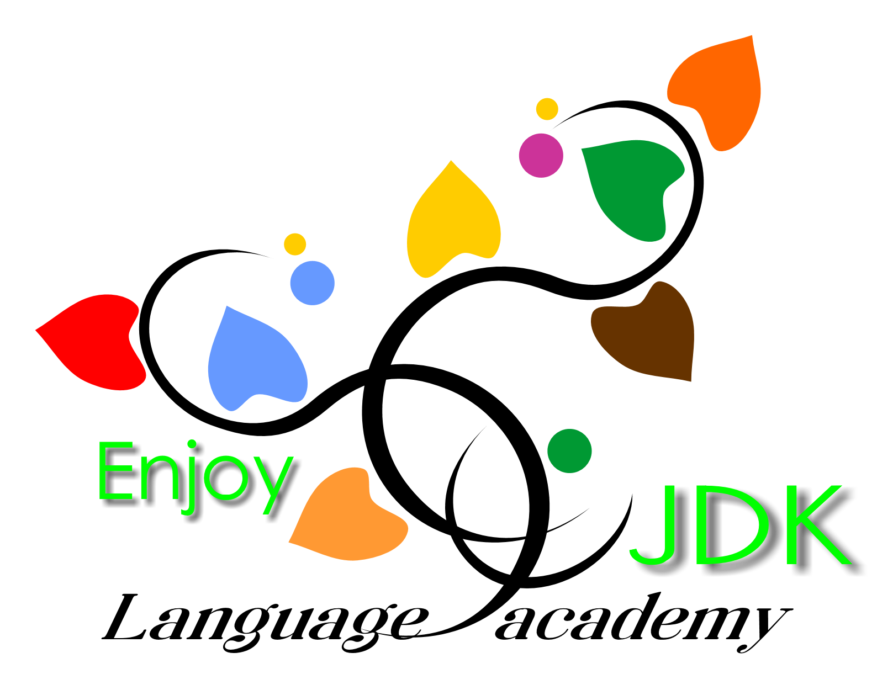

JLPT N5対策アプリ

こんにちは！
このアプリは、JLPT N5の文法を べんきょうする アプリです。
このアプリでは、つぎの 3つ が できます。
- A：レベルチェック (Level Check)
いまの 日本語レベルを しらべます。
- B：弱点分析 (Weakness Analysis)
にがてな 文法が わかります。
- C：強化練習 (Intensive Practice)
にがてな 文法を たくさん れんしゅうします。
はじめての人は、A（レベルチェック）から はじめてください。
レベルチェックについて
- もんだいは 40問 あります。
- 文を よんで、（ ）や（★）に はいる いちばん いい ことばを えらびます。
- えらぶ ことばは 4つ あります。
-
（ ）に（★）が ある もんだいが あります。
ことばを ただしい じゅんばんに ならべて、（★）の ことばを えらんでください。
- えらばないと、つぎに すすみません。
- ※ もんだいは、まえに もどることが できません。
じゅんびが できたら、したの ボタンを おしてください。
準備OK / Ready